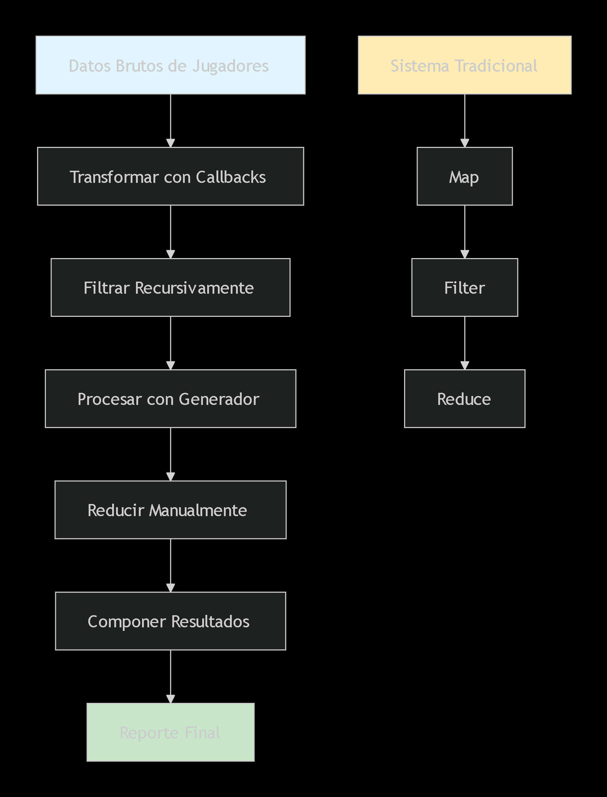

Proyecto de Pensamiento Creativo con IA - Bootcamp JavaScript
Concepto JavaScript: Funciones de orden superior y composicion funcional
Desafio: Recrear map, filter y reduce SIN usar los metodos nativos
Tema no relacionado: Estadisticas deportivas (futbol)
Implementaciones:
Mejora 1: Cambio de recursión a iteración en filtrado
Mejora 2: Validación de parámetros y manejo de errores
Visualizacion generada por IA explicando el proceso:
Diagrama generado con Mermaid.js que compara el enfoque tradicional vs el alternativo
Este diagrama explica el proceso complejo a un publico no tecnico:
La visualizacion ayuda a entender como reimplementamos funcionalidades basicas para profundizar el aprendizaje.